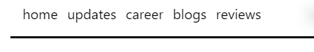

MATTBRAMER.COM SECOND UPDATE
June 22, 2022
Topics of Post
This update has topics, please click the topic you'd like to jump to!
Formatting
Here we go! The second major update to mattbramer.com! This update is mostly regarding formatting.

The best places to see that new formatting is how the text is mostly centered. I think that fits more with this site. I've been working hard on formatting and things change all the time but, the best place to start with formatting is what's known as mobile first programming.
With mobile first programming, the goal is obviously, to work from mobile view sizes first. That's not what I did, I worked directly from a standard desktop size. At that time, I thought that was the goal, but turns out it was not. Ergo, this update. I worked with centering the texts, and updating the navigation bar, which I'll talk about next!
Navigation Bar
You might recall, the previous incarnation of this navigation bar there were different words there. I had it setup as: mattbramer udpates school & work blogs social dev. That is obviously not sustainable as I continue to add more sections to the site.
The naming convention worked out to a smaller format and a all-together cleaner appearance.
Now, there is only: home updates career blogs and now.. reviews!
Reviews
Most of you know, I have been on a bit of reading kick as of the beginning of this year. And I've found this great site GoodReads! It's an awesome place to find book recommendations and reviews by others.
I was using GoodReads as a place for my reviews, in additon to a video review as well! My reviews won't only be on books, but for now it's all books! Now, let's talk formatting for those reviews!
Here we can see the typical format of a review. Title, date, screenshot of content. Below that, the video review, if I have a video review. I like starting with the video, in case you don't want to read, or in case I don't have a video review as well.
Footer
Here you can see the footer, previously there was no footer! There was a social section and developer section. But now, that is all in the footer. All still clickable, but just all in the bottom of the site.
Final Note
Hey, thanks so much for checking out my website, and reading my second update! Be on the lookout for more udpates to come. I am currently watching the season finale of Obi-Wan Kenobi right now and I'm smiling from ear to ear. I can't wait to writeup my review!